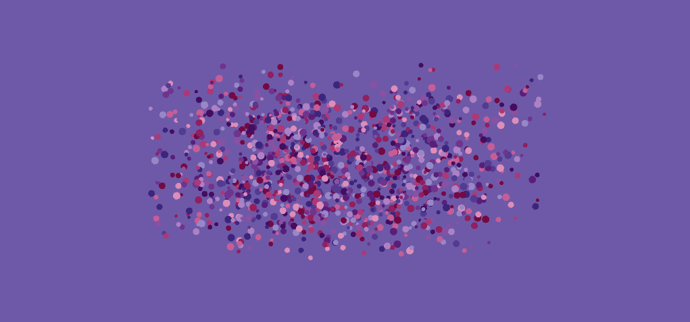

I made this music visualizer with Processing.
The title, composed of small dots come into focus with the
use of Guassian blur.
The dots are placed randomly using an alpha mask of the
title generated on startup. The title
is disintegrated and the main visualizer is faded in.

The main music visualizer shows the waveform for the song
at the top and the bottom as well as a large, stationary
dot in the middle which pulsates based on the minim beat
detection algorithm.
A spectrograph is also shown on the right and dots
move from right to left in the background at different
rates to give an illusion of movement. The dots differing
size and speed make it look as if the large dot is floating
through space.
At the end of the song, the ID3 tags are pulled and
information such as the song title, author, album
and duration are shown.